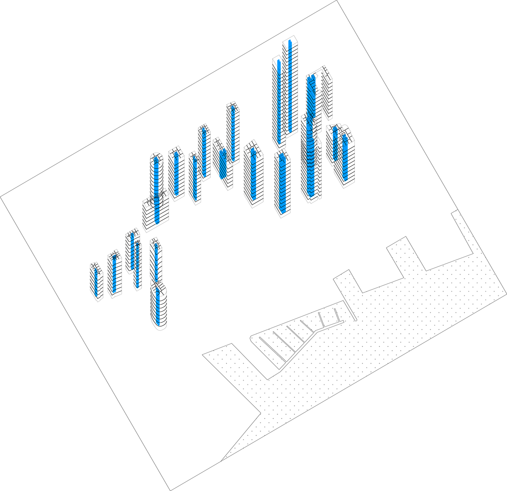
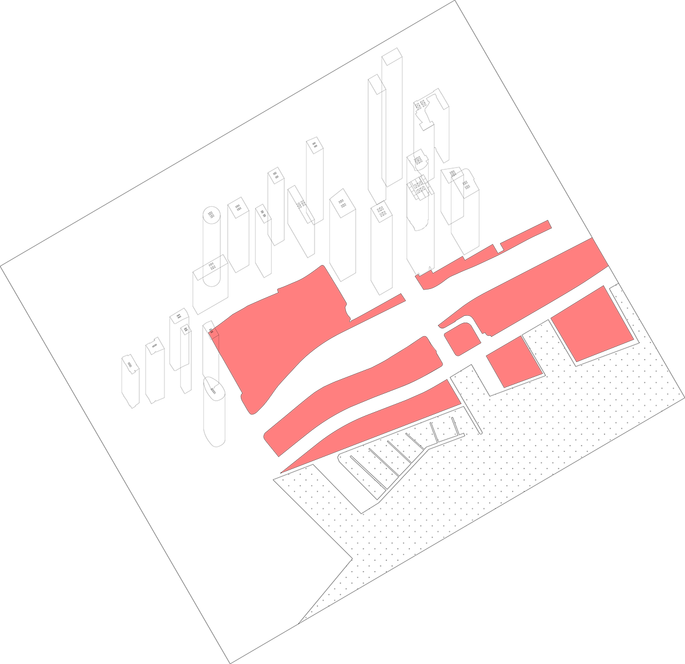
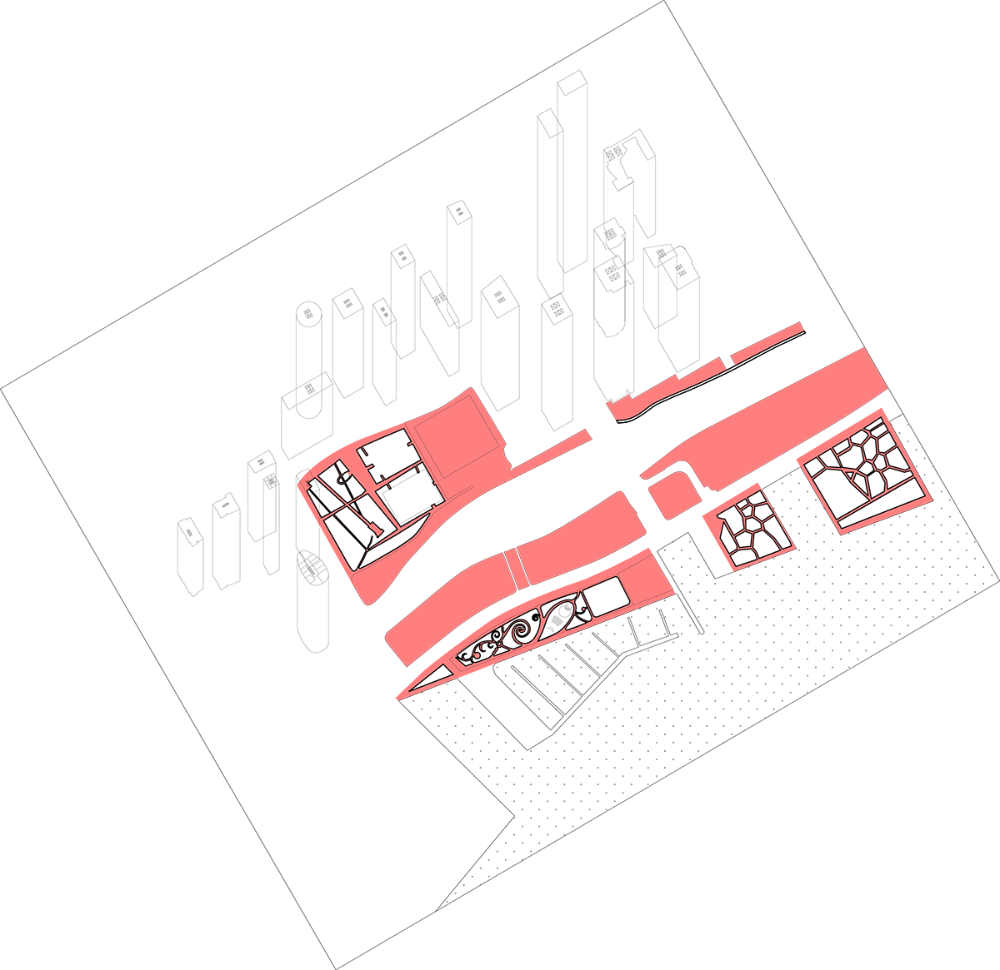
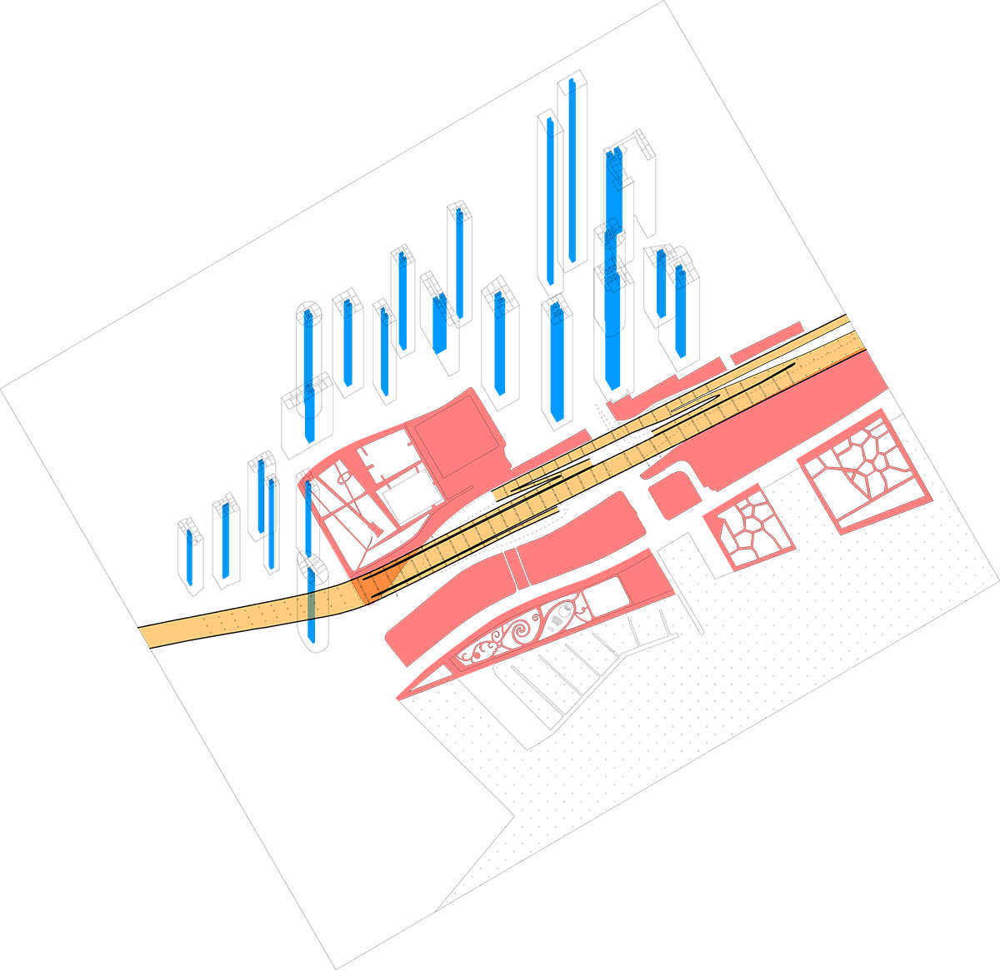
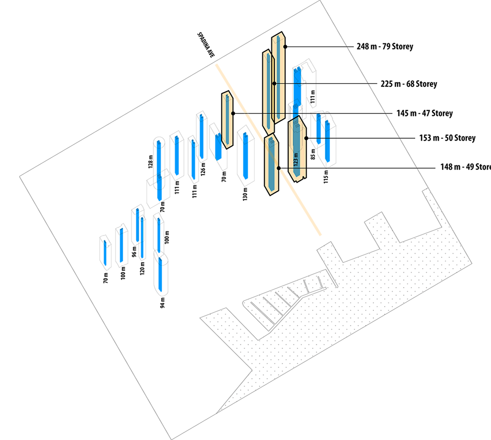
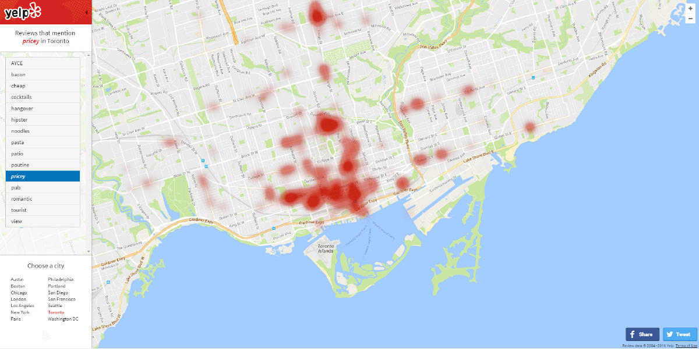
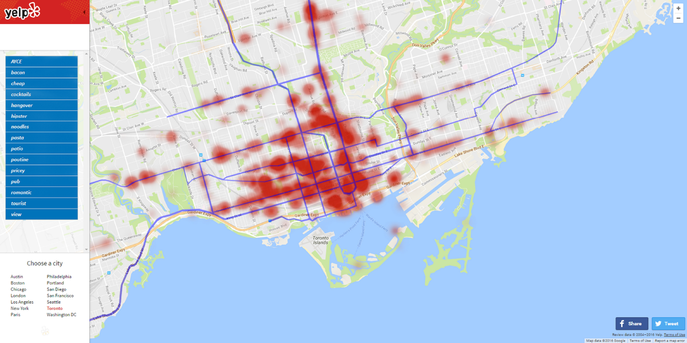
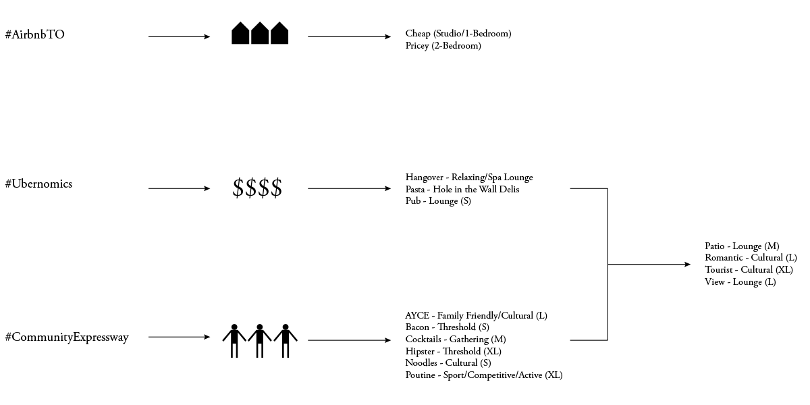
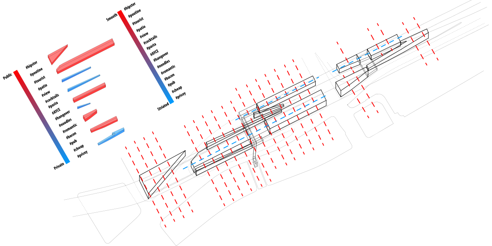
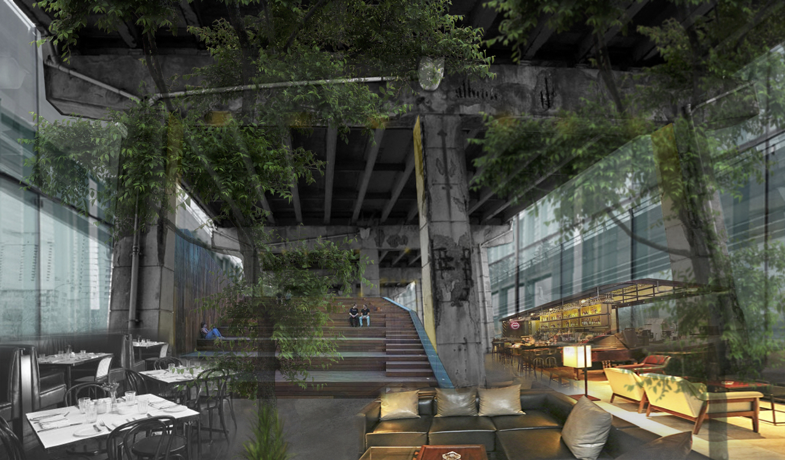

Existing Under Gardiner space at and around Spadina Avenue
Overview
Design Strategy
Big Data
Design Research
Mega Junkspace is a 1-year Design Thesis Project for my Master of Architecture degree. I was interested with the possibilities of using Open Source Big Data to tackle complex socio-spatial problems. I ended up designing 'Experiences', instead of a traditional building form.
Context
Socio-Political
Political bureaucracy caused Toronto's neighbourhood of Railway Lands (City Place) and Waterfront Toronto (Harbourfront) to be planned as two separate neighbourhood, regardless of their juxtaposition. The existing elevated highway, Gardiner Expressway, exacerbates the segregation spatially, and causes North-South accessibility problems for the two neighbourhood.
What was once constructed
to connect over long distance,
ironically becomes a local barrier.
Framework: Assemblage

Striated Space (City Place)

Smooth Space (Harbourfront)

Rhizomes - Nomadic Movement

Gardiner Expressway = North-South Inaccessibility
Previous
Next
As a framework to understand the relationship between City Place, Harbourfront, and Gardiner Expressway, I adopted the conceptual opposition relationship of Smooth and Striated Space by Deleuze and Guattari.
Assemblage Theory by Deleuze and Guattari provides a bottom-up framework for analyzing social complexity by focusing on fluidity, movement, and multiple functionalities. Its assertion that, within a body, the relationship of components are not stable and constant. Instead, they can be displaced and replaced, thus creating a system from relations of exteriority.
Striated Space (City Place) is structured tree-like, hierarchically organized and deeply rooted with a vertical stem. This kind of rigid, hierarchical, tree-like thinking eradicates the vitality of urban life because of its tendency to produce conformity and neutrality, suppressing the differences that are the wellspring of urban life.
Smooth Space (Harbourfront) is identified with rhizomatic modes of practice, migrating horizontally within the interstices of a larger order, depending on opportunity and circumstances.
Striated Space is identified with sedentary dwelling practices and territorial roots, while Smooth Space is identified with nomadic movement across all spatial surfaces. In this thesis, I am treating the spatial accessibility as tree-like, striated spaces and social desire as rhizomic, smooth spaces to create an Assemblage.

Challenge
Financial
The Gardiner Expressway is one of the main infrastructure that supports Toronto as an urban center, complete removal is not an option. However, annual maintenance cost the City of Toronto $12million. That's a total of $75million in the past decade alone.
With $33million of infrastructure backlog, Toronto City Council has approved construction and development plans without the money to pay for them.
HOW MIGHT WE
Utilize Open Source Big Data to repurpose Left-over Urban Space that has no bylaws, in order to:
• Improve community engagement
• Reduce annual infrastructure maintenance cost
Existing Surrounding
The Bentway is an effort by the private sector to reinvent some of the underused space underneath the Gardiner. It divided its site of intervention along the Gardiner into 3 segments. The east segment focused solely on reinventing City Place Community and connects to the central segment via the planned Loblaws tower. The thesis incorporates the Bentway and propose changes when deem appropriate.
Strategy
1. Reclaim Pedestrian Flow
The Gardiner Expressway automatically prevents any folding to occur. To improve community engagement, introducing seamless pedestrian flow is crucial. To do that, the proposed organic artifact would either 'be' the connection or 'support' the connection, or even function as both.
2. Big Data as Design Tool
Because there is no bylaws on left-over urban space (when this project started), I could not start the design process using traditional ways of designing:
1. Starts by observing the intervention site.
2. Apply zoning bylaws to limit what you can and cannot design.
3. Schematic, Design Development, Construction Document.
Big Datas could be utilized to prompt design process when constraints are absent. Because the area's main problem is the lack of community, Big Datas generated by Toronto's Social Media sites, for example
Yelp Wordmap, have the potential to visualize existing social problems, eventually producing data-driven solutions.
The Big Data from Yelp unexpectedly reveals the depth of correlation between Torontonians 'Desires' and built transit infrastructure in Toronto.

Concentration = Singular Desire

Connection = Desires + Transit
Previous
Next
Instead of having planners and developers deciding, why shouldn't designers let Torontonians decide what should be built in their city themselves.
Space is not a stable framework within which things or subjects exist but is constructed through flows of desire between them. Deleuzian thinking suggests that Desire is the immanent productive force of life itself without which, there is no city.
The human brain has not changed in the last 50,000 years. The only thing that is different, is our mastery of tools. We went from sticks and stones to tools that could learn on its own.
This means:
Current immanent 'Desires',
will be more or less the same for the next 1000s of years at least.
3. Spatial Converge

Desires Typology as Programs

1 = Desires + Existing Grid System

2 = 1 + Pedestrian Flow
Most Stressful Pedestrian Flow = A and B
Previous
Next
Superimposing 'Desires' Typology, proposed Pedestrian Flow, and the existing Grid system of the Gardiner Expressway provides a consistent spatial rule that guides the design process in creating an experience that engages the community through repurposing costly infrastructure in Toronto.

Proposed Under Gardiner space at and around Spadina Avenue
Influences and Works Cited
Professor Emeritus George Baird
Professor Mason White
Delanda, Manuel - A New Philosophy of Society (2006)
Deleuze, Gilles and Felix Guattari - A Thousand Plateaus (1980)
Dovey, Kim - Becoming Places (2010), Urban Design Thinking (2016)
Frank, Karen and Quentin Stevens - Loose Space: Possibility and Diversity in Urban Life (2007)
insideairbnb.com - Airbnb Toronto Listings Map
Jacobs, Jane - The Death and Life of American Cities (1961)
Koolhaas, Rem - Junkspace (2002)
Lefebvre, Henri - The Production of Space (1974)
UBC School of Population and Public Health - Cycling in Cities Research
TTC, Uber Canada and Yelp